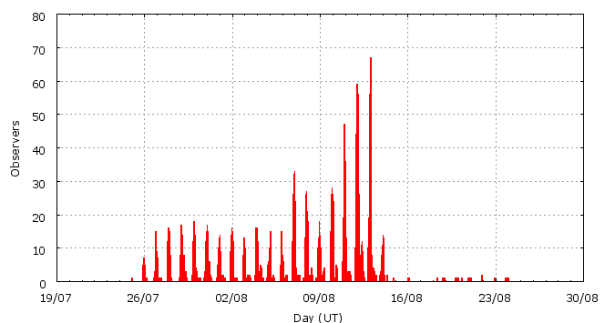

This page shows automated results of the Perseids 2008, based on visual data entered through the IMO electronic report form. Send your feedback regarding this page to Geert Barentsen or visit the project pages. Note that these automated results may not be suitable for scientific use!
Page generated: 2009 June 6 at 0:54 UT.
ZHRmax = 116 based on 28527 Perseids in 3943 data intervals, assuming fixed population index r = 2.1 and zenith correction 1/sin(hR).

| Time (UT) | Solarlon | nINT | nPER | ZHR | |
|---|---|---|---|---|---|
| 2008-07-25 00:07 | 122.315 | 1 | 0 | 3 | +-3 |
| 2008-07-25 23:37 | 123.251 | 23 | 29 | 6 | +-1 |
| 2008-07-26 23:33 | 124.204 | 53 | 124 | 8 | +-1 |
| 2008-07-27 07:49 | 124.533 | 1 | 2 | 5 | +-3 |
| 2008-07-27 23:37 | 125.162 | 71 | 192 | 9 | +-1 |
| 2008-07-29 01:12 | 126.181 | 108 | 325 | 9 | +-0 |
| 2008-07-29 18:40 | 126.878 | 6 | 15 | 9 | +-2 |
| 2008-07-30 00:43 | 127.119 | 78 | 241 | 9 | +-1 |
| 2008-07-30 20:04 | 127.889 | 18 | 65 | 10 | +-1 |
| 2008-07-31 01:40 | 128.113 | 93 | 325 | 10 | +-1 |
| 2008-07-31 23:57 | 129.001 | 62 | 201 | 11 | +-1 |
| 2008-08-01 09:20 | 129.375 | 4 | 20 | 12 | +-3 |
| 2008-08-01 23:41 | 129.948 | 88 | 389 | 13 | +-1 |
| 2008-08-02 09:00 | 130.319 | 1 | 3 | 16 | +-8 |
| 2008-08-03 00:25 | 130.935 | 42 | 236 | 13 | +-1 |
| 2008-08-03 17:36 | 131.620 | 20 | 65 | 15 | +-2 |
| 2008-08-04 01:45 | 131.946 | 68 | 367 | 12 | +-1 |
| 2008-08-04 19:18 | 132.646 | 12 | 41 | 12 | +-2 |
| 2008-08-05 00:41 | 132.861 | 76 | 352 | 16 | +-1 |
| 2008-08-05 23:29 | 133.771 | 67 | 327 | 16 | +-1 |
| 2008-08-06 22:01 | 134.670 | 114 | 502 | 16 | +-1 |
| 2008-08-07 01:11 | 134.797 | 82 | 431 | 17 | +-1 |
| 2008-08-07 22:03 | 135.630 | 87 | 504 | 17 | +-1 |
| 2008-08-08 03:20 | 135.842 | 33 | 255 | 19 | +-1 |
| 2008-08-08 23:26 | 136.645 | 97 | 503 | 23 | +-1 |
| 2008-08-09 07:34 | 136.969 | 13 | 97 | 21 | +-2 |
| 2008-08-09 21:44 | 137.536 | 68 | 501 | 23 | +-1 |
| 2008-08-09 23:46 | 137.617 | 61 | 503 | 24 | +-1 |
| 2008-08-10 02:16 | 137.716 | 66 | 444 | 25 | +-1 |
| 2008-08-10 21:28 | 138.484 | 61 | 503 | 30 | +-1 |
| 2008-08-10 22:51 | 138.539 | 67 | 509 | 28 | +-1 |
| 2008-08-10 23:48 | 138.577 | 74 | 585 | 28 | +-1 |
| 2008-08-11 00:52 | 138.620 | 67 | 680 | 32 | +-1 |
| 2008-08-11 01:53 | 138.660 | 55 | 510 | 36 | +-2 |
| 2008-08-11 07:25 | 138.882 | 29 | 237 | 34 | +-2 |
| 2008-08-11 21:29 | 139.444 | 94 | 506 | 46 | +-2 |
| 2008-08-11 22:32 | 139.486 | 203 | 889 | 43 | +-1 |
| 2008-08-11 23:30 | 139.525 | 233 | 1120 | 48 | +-1 |
| 2008-08-12 00:25 | 139.561 | 153 | 1028 | 49 | +-2 |
| 2008-08-12 01:31 | 139.606 | 111 | 1086 | 68 | +-2 |
| 2008-08-12 02:36 | 139.649 | 80 | 517 | 68 | +-3 |
| 2008-08-12 04:35 | 139.728 | 99 | 502 | 71 | +-3 |
| 2008-08-12 07:32 | 139.846 | 58 | 502 | 68 | +-3 |
| 2008-08-12 09:17 | 139.916 | 54 | 503 | 78 | +-3 |
| 2008-08-12 17:05 | 140.228 | 59 | 506 | 54 | +-2 |
| 2008-08-12 22:41 | 140.452 | 61 | 503 | 67 | +-3 |
| 2008-08-12 23:37 | 140.489 | 167 | 1646 | 77 | +-2 |
| 2008-08-13 00:34 | 140.527 | 218 | 2764 | 90 | +-2 |
| 2008-08-13 01:33 | 140.566 | 224 | 3608 | 113 | +-2 |
| 2008-08-13 02:23 | 140.600 | 81 | 1024 | 116 | +-4 |
| 2008-08-13 05:20 | 140.718 | 45 | 500 | 73 | +-3 |
| 2008-08-13 11:19 | 140.957 | 20 | 198 | 41 | +-3 |
| 2008-08-13 23:47 | 141.455 | 57 | 510 | 33 | +-1 |
| 2008-08-14 02:01 | 141.545 | 30 | 441 | 37 | +-2 |
| 2008-08-14 20:48 | 142.296 | 3 | 3 | 13 | +-6 |
| 2008-08-16 01:50 | 143.458 | 3 | 26 | 17 | +-3 |
| 2008-08-18 20:00 | 146.108 | 1 | 2 | 13 | +-8 |
| 2008-08-18 21:30 | 146.168 | 2 | 8 | 18 | +-6 |
| 2008-08-19 23:43 | 147.219 | 6 | 14 | 9 | +-2 |
| 2008-08-20 14:15 | 147.802 | 2 | 4 | 9 | +-4 |
| 2008-08-20 23:00 | 148.153 | 5 | 19 | 12 | +-3 |
| 2008-08-21 21:46 | 149.066 | 3 | 0 | 1 | +-1 |
| 2008-08-22 23:11 | 150.087 | 2 | 5 | 7 | +-3 |
| 2008-08-23 22:12 | 151.011 | 3 | 10 | 13 | +-4 |
For each estimation interval: time is the middle of the interval, nINT is the number of observing periods and nPER is the number of Perseids involved. ZHR = (1 + sum nPER) / sum(Teff/C) where Teff is the effective observing time and C is the total correction for limiting magnitude, clouds and zenith correction. The solar longitudes refer to equinox J2000.0.
ZHRmax = 131 based on 21353 Perseids in 2399 data intervals, assuming fixed population index r = 2.1 and zenith correction 1/sin(hR).

| Time (UT) | Solarlon | nINT | nPER | ZHR | |
|---|---|---|---|---|---|
| 2008-08-10 21:04 | 138.468 | 35 | 252 | 25 | +-2 |
| 2008-08-10 22:00 | 138.505 | 26 | 251 | 36 | +-2 |
| 2008-08-10 22:36 | 138.529 | 38 | 253 | 29 | +-2 |
| 2008-08-10 23:10 | 138.552 | 29 | 256 | 28 | +-2 |
| 2008-08-10 23:35 | 138.569 | 42 | 257 | 26 | +-2 |
| 2008-08-11 00:04 | 138.588 | 29 | 258 | 27 | +-2 |
| 2008-08-11 00:31 | 138.606 | 26 | 261 | 34 | +-2 |
| 2008-08-11 00:55 | 138.622 | 28 | 256 | 30 | +-2 |
| 2008-08-11 01:16 | 138.636 | 19 | 254 | 38 | +-2 |
| 2008-08-11 01:40 | 138.651 | 26 | 256 | 30 | +-2 |
| 2008-08-11 02:14 | 138.675 | 28 | 256 | 43 | +-3 |
| 2008-08-11 07:44 | 138.894 | 27 | 214 | 34 | +-2 |
| 2008-08-11 21:07 | 139.429 | 49 | 258 | 42 | +-3 |
| 2008-08-11 21:54 | 139.461 | 48 | 250 | 50 | +-3 |
| 2008-08-11 22:15 | 139.474 | 81 | 252 | 40 | +-3 |
| 2008-08-11 22:36 | 139.488 | 58 | 310 | 46 | +-3 |
| 2008-08-11 22:51 | 139.499 | 56 | 272 | 45 | +-3 |
| 2008-08-11 23:07 | 139.509 | 58 | 289 | 48 | +-3 |
| 2008-08-11 23:21 | 139.519 | 60 | 308 | 51 | +-3 |
| 2008-08-11 23:37 | 139.529 | 55 | 263 | 51 | +-3 |
| 2008-08-11 23:52 | 139.539 | 62 | 291 | 41 | +-2 |
| 2008-08-12 00:07 | 139.549 | 58 | 262 | 49 | +-3 |
| 2008-08-12 00:20 | 139.558 | 42 | 287 | 45 | +-3 |
| 2008-08-12 00:38 | 139.570 | 28 | 258 | 51 | +-3 |
| 2008-08-12 00:55 | 139.581 | 31 | 261 | 51 | +-3 |
| 2008-08-12 01:11 | 139.592 | 29 | 289 | 72 | +-4 |
| 2008-08-12 01:27 | 139.602 | 30 | 282 | 68 | +-4 |
| 2008-08-12 01:42 | 139.613 | 26 | 252 | 62 | +-4 |
| 2008-08-12 01:55 | 139.621 | 24 | 251 | 73 | +-5 |
| 2008-08-12 02:17 | 139.636 | 38 | 252 | 70 | +-4 |
| 2008-08-12 02:55 | 139.661 | 41 | 259 | 66 | +-4 |
| 2008-08-12 03:59 | 139.704 | 62 | 251 | 61 | +-4 |
| 2008-08-12 05:35 | 139.768 | 37 | 251 | 86 | +-5 |
| 2008-08-12 07:02 | 139.826 | 30 | 261 | 68 | +-4 |
| 2008-08-12 08:06 | 139.869 | 29 | 260 | 70 | +-4 |
| 2008-08-12 08:51 | 139.898 | 31 | 255 | 77 | +-5 |
| 2008-08-12 10:01 | 139.945 | 26 | 263 | 76 | +-5 |
| 2008-08-12 13:39 | 140.091 | 28 | 251 | 67 | +-4 |
| 2008-08-12 21:39 | 140.410 | 30 | 261 | 45 | +-3 |
| 2008-08-12 22:32 | 140.446 | 35 | 250 | 76 | +-5 |
| 2008-08-12 23:01 | 140.465 | 29 | 250 | 60 | +-4 |
| 2008-08-12 23:16 | 140.475 | 35 | 306 | 88 | +-5 |
| 2008-08-12 23:33 | 140.486 | 47 | 390 | 66 | +-3 |
| 2008-08-12 23:47 | 140.496 | 53 | 640 | 78 | +-3 |
| 2008-08-13 00:03 | 140.506 | 52 | 581 | 83 | +-3 |
| 2008-08-13 00:17 | 140.515 | 52 | 609 | 80 | +-3 |
| 2008-08-13 00:33 | 140.526 | 44 | 487 | 70 | +-3 |
| 2008-08-13 00:47 | 140.536 | 59 | 887 | 106 | +-4 |
| 2008-08-13 01:02 | 140.546 | 64 | 985 | 107 | +-3 |
| 2008-08-13 01:18 | 140.556 | 57 | 1041 | 117 | +-4 |
| 2008-08-13 01:33 | 140.566 | 52 | 728 | 120 | +-4 |
| 2008-08-13 01:47 | 140.575 | 60 | 919 | 105 | +-3 |
| 2008-08-13 02:02 | 140.586 | 48 | 730 | 131 | +-5 |
| 2008-08-13 02:16 | 140.595 | 29 | 445 | 111 | +-5 |
| 2008-08-13 02:39 | 140.610 | 31 | 256 | 110 | +-7 |
| 2008-08-13 03:26 | 140.641 | 20 | 251 | 85 | +-5 |
| 2008-08-13 06:43 | 140.773 | 26 | 250 | 64 | +-4 |
| 2008-08-13 11:19 | 140.957 | 20 | 198 | 41 | +-3 |
| 2008-08-13 23:10 | 141.431 | 33 | 250 | 31 | +-2 |
| 2008-08-14 00:38 | 141.489 | 24 | 260 | 35 | +-2 |
| 2008-08-14 01:31 | 141.525 | 19 | 257 | 38 | +-2 |
| 2008-08-14 02:20 | 141.558 | 10 | 160 | 39 | +-3 |
For each estimation interval: time is the middle of the interval, nINT is the number of observing periods and nPER is the number of Perseids involved. ZHR = (1 + sum nPER) / sum(Teff/C) where Teff is the effective observing time and C is the total correction for limiting magnitude, clouds and zenith correction. The solar longitudes refer to equinox J2000.0.
Data has been received from 238 observers in 33 countries. Thank you for your efforts!

| Observer | Country | Teff | nPER |
|---|---|---|---|
| Tomasz Adam | Poland | 0.16h | 1 |
| Salvador Aguirre | Mexico | 28.80h | 170 |
| Reyhane Akhbari | Iran | 2.49h | 13 |
| Plamena Alexandrova | Bulgaria | 2.07h | 98 |
| Karl Antier | France | 0.92h | 22 |
| Rainer Arlt | Germany | 0.23h | 21 |
| Igor Arolovich | Israel | 1.50h | 21 |
| Amin Asadi | Iran | 2.49h | 9 |
| Jure Atanackov | Slovenia | 1.22h | 140 |
| Gary Auker | United Kingdom | 0.55h | 21 |
| Pierre Bader | Germany | 18.45h | 296 |
| Ricardas Balciunas | Lithuania | 2.83h | 35 |
| Ana Bankovic | Serbia | 1.80h | 23 |
| Hadi Barghamadi | Iran | 4.60h | 58 |
| Tomasz Bartosik | Poland | 0.98h | 16 |
| Orlando Benitez Sanchez | Spain | 6.40h | 191 |
| Felix Bettonvil | Netherlands | 4.63h | 359 |
| Jean-marie Biets | Belgium | 11.97h | 262 |
| Jean-marie Biets | Belgium | 2.23h | 8 |
| Lukas Bolz | Germany | 2.67h | 29 |
| Emil Brezina | Czech Republic | 0.84h | 42 |
| Anna Brylyakova | Ukraine | 25.15h | 179 |
| Andreas Buchmann | Switzerland | 4.09h | 85 |
| Aleksandar Bulj | Croatia | 1.00h | 17 |
| Vasko Cacanoski | Macedonia | 2.69h | 135 |
| Rafael Campillos Ladero | Spain | 3.65h | 74 |
| Jose Carlos Millan | Spain | 2.33h | 16 |
| Igor Chalenko | Ukraine | 6.38h | 74 |
| Marcin Chwala | Poland | 51.70h | 263 |
| Andrew Cooper | United States | 0.83h | 41 |
| Orley Cruz | Cuba | 2.64h | 29 |
| Nadka Dankova | Bulgaria | 0.92h | 8 |
| Mitra Dashtaki | Iran | 2.49h | 22 |
| Mark Davis | United States | 10.40h | 73 |
| Bert De Brabandere | Belgium | 8.35h | 102 |
| Karel Dewaele | Belgium | 0.91h | 51 |
| Valentin Diaz Parreno | Spain | 1.41h | 58 |
| Sietse Dijkstra | Netherlands | 14.42h | 303 |
| Todor Dimitrov | Bulgaria | 3.83h | 148 |
| Irena Divisova | Czech Republic | 12.00h | 97 |
| Audrius Dubietis | Lithuania | 20.75h | 242 |
| Jaroslaw Dygos | Poland | 35.25h | 229 |
| Urszula Dzikowicz | Poland | 2.95h | 22 |
| Gadi Eidelheit | Israel | 1.55h | 40 |
| Shlomi Eini | Israel | 5.64h | 251 |
| Chad K. Ellington | United States | 1.27h | 108 |
| Chad K Ellington | United States | 0.92h | 52 |
| Frank Enzlein | Germany | 6.90h | 109 |
| Saied Fazeli | Iran | 2.49h | 18 |
| Mihai Florea | Romania | 2.62h | 49 |
| Antal Fodor | Hungary | 2.75h | 207 |
| Ariel Gershengold | Israel | 1.45h | 30 |
| Christoph Gerber | Germany | 2.50h | 2 |
| William Godley | United States | 6.75h | 20 |
| Svetlana Goncova | Ukraine | 3.99h | 16 |
| Mitja Govedic | Slovenia | 18.37h | 758 |
| Alexandru S. Grigore | Romania | 25.72h | 617 |
| Valentin Grigore | Romania | 14.58h | 358 |
| Laszlo Gyarmati | Hungary | 5.75h | 355 |
| Shy Halatzi | Israel | 10.05h | 181 |
| Wayne T. Hally | United States | 26.35h | 282 |
| Teemu Hankamaki | Finland | 1.50h | 28 |
| Therese Hansson | Sweden | 1.50h | 28 |
| Yegene Harirchi | Iran | 2.49h | 15 |
| Roberto Haver | Italy | 1.73h | 123 |
| Roberto Haver | Italy | 2.53h | 65 |
| Roberto Haver | Italy | 2.00h | 22 |
| Maryam Hazratiniya | Iran | 2.49h | 25 |
| Vilem Heblik | Czech Republic | 51.79h | 276 |
| Netanel Hershkovitz | Israel | 0.94h | 4 |
| Veerle Herrygers | Belgium | 1.88h | 29 |
| Grigory Hmel | Ukraine | 2.68h | 16 |
| Ken Hodonsky | United States | 6.03h | 86 |
| Sorin Hotea | Romania | 9.57h | 413 |
| Michiel Hubeau | Belgium | 9.38h | 292 |
| Andrey Igoshev | Russia | 5.00h | 21 |
| Frosina Ilievska | Macedonia | 2.46h | 110 |
| Lars Jacobs | Belgium | 14.54h | 212 |
| Khatere Jalili | Iran | 2.49h | 23 |
| Carl Johannink | Netherlands | 35.40h | 402 |
| Javor Kac | Slovenia | 25.11h | 708 |
| Manos Kardasis | Greece | 1.53h | 65 |
| Roy Keeris | Netherlands | 2.83h | 96 |
| Jakub Koukal | Czech Republic | 98.88h | 1184 |
| Sergey Krasilnikov | Ukraine | 15.18h | 298 |
| Sergey Krasilnikov | Ukraine | 5.67h | 277 |
| Sergey Krasilnikov | Ukraine | 4.48h | 91 |
| Gyongyver Kudor | Hungary | 3.00h | 52 |
| Patrycja Kurowska | Poland | 2.95h | 13 |
| Michal Kusiak | Poland | 0.33h | 22 |
| Maciej Kwinta | Poland | 8.00h | 96 |
| Andrey Kychyzhyyev | Ukraine | 6.67h | 55 |
| Martin Labudik | Slovakia | 1.50h | 2 |
| Adrian Lelyen | Cuba | 2.74h | 24 |
| Greet Lembregts | Belgium | 7.08h | 28 |
| Jan Lembregts | Belgium | 2.29h | 14 |
| Peter Van Leuteren | Netherlands | 38.66h | 380 |
| Anna S. Levina | Israel | 17.75h | 505 |
| Vecheslav Levchik | Belarus | 1.49h | 17 |
| Alister Ling | Canada | 0.91h | 48 |
| Mike Linnolt | United States | 1.00h | 59 |
| David Lukacs | Hungary | 2.75h | 232 |
| Jose Luis Maestre Garcia | Spain | 3.29h | 177 |
| Mehran Mahmodi | Iran | 2.49h | 13 |
| Olga Malinina | Ukraine | 16.21h | 71 |
| Justyna Mamzer | Poland | 2.95h | 24 |
| Grigoris Maravelias | Greece | 4.33h | 124 |
| Ivana Marjanovic | Serbia | 10.10h | 60 |
| Milos Maric | Serbia | 8.11h | 44 |
| Monika Martiniskova | Slovakia | 2.40h | 3 |
| Pierre Martin | Canada | 19.60h | 371 |
| Antonio Martinez | Venezuela | 6.56h | 255 |
| Mikhail Maslov | Russia | 0.90h | 10 |
| Bruce Mccurdy | Canada | 17.50h | 299 |
| Frederic Merlin | France | 3.09h | 171 |
| Alexandra Mikuskova | Slovakia | 1.87h | 4 |
| Jose Carlos Millan | Spain | 2.97h | 104 |
| Koen Miskotte | Netherlands | 36.13h | 471 |
| Mandana Moghiman | Iran | 2.49h | 184 |
| Faeze Mohammadi | Iran | 2.49h | 19 |
| Sirko Molau | Germany | 3.63h | 57 |
| Sabine Wachter | Germany | 4.57h | 34 |
| Umberto Mule Stagno | Malta | 0.25h | 17 |
| Arash Nabizadeh | Iran | 1.48h | 81 |
| Mohammad Nilforoushan | Iran | 2.97h | 160 |
| Markku Nissinen | Finland | 1.02h | 3 |
| Tereza Novotna | Czech Republic | 1.50h | 30 |
| Ingo Ortmann | Germany | 2.87h | 4 |
| Jaroslav Pastorek | Slovakia | 2.50h | 3 |
| Anna Pavlova | Ukraine | 15.56h | 116 |
| Dusan Pavlovic | Serbia | 1.00h | 0 |
| Dusan Pavlovic | Serbia | 1.33h | 33 |
| Dusan Pavlovic | Serbia | 1.25h | 2 |
| Lovro Pavletic | Croatia | 1.58h | 44 |
| Mattias Persson | Sweden | 2.34h | 55 |
| Ivica Pesun | Croatia | 1.50h | 31 |
| Carles Pineda Ferre | Spain | 4.99h | 147 |
| Rostislav Pleshivtsev | Spain | 4.04h | 65 |
| Krzysztof Polakowski | Poland | 26.49h | 180 |
| Robert Pomohaci | Romania | 7.53h | 140 |
| Szaniszlo Prohaszka | Hungary | 3.00h | 38 |
| Jurgen Rendtel | Germany | 69.40h | 662 |
| Anna Rieth | Hungary | 5.75h | 153 |
| Adrian Ritterman | Croatia | 3.13h | 35 |
| Adrian Ritterman | Croatia | 2.58h | 56 |
| Adrian Ritterman | Croatia | 5.75h | 118 |
| Mileny Roche Lamas | Cuba | 3.00h | 17 |
| Denis Samsonov | Ukraine | 7.07h | 98 |
| Krisztian Sarneczky | Hungary | 3.00h | 66 |
| Branislav Savic | Serbia | 34.91h | 698 |
| Teodora Savic Popovic | Serbia | 2.66h | 85 |
| Teodora Savic Popovic | Serbia | 0.25h | 4 |
| Teodora Savic Popovic | Serbia | 2.88h | 37 |
| Teodora Savic Popovic | Serbia | 2.89h | 235 |
| Teodora Savic Popovic | Serbia | 11.84h | 105 |
| Teodora Savic Popovic | Serbia | 1.00h | 0 |
| Teodora Savic Popovic | Serbia | 1.00h | 28 |
| Vasiliy Sedov | Ukraine | 27.99h | 303 |
| Vasiliy Sedov | Ukraine | 3.41h | 60 |
| Kristine Shults | Ukraine | 26.73h | 289 |
| Marcin Sienko | Poland | 2.00h | 2 |
| Magdalena Sieniawska | Poland | 22.25h | 153 |
| Andrea Sipka | Serbia | 1.17h | 28 |
| Andrea Sipka | Serbia | 0.42h | 2 |
| Andrea Sipka | Serbia | 3.01h | 44 |
| Andrea Sipka | Serbia | 1.75h | 13 |
| Andrea Sipka | Serbia | 4.72h | 224 |
| Andrea Sipka | Serbia | 1.34h | 17 |
| Andrea Sipka | Serbia | 4.04h | 47 |
| Andrea Sipka | Serbia | 2.82h | 32 |
| Dariusz Sitek | Poland | 1.97h | 26 |
| Tadeusz Sobczak | Poland | 28.75h | 252 |
| Igor Sovtus | Ukraine | 11.71h | 31 |
| Florin-alexandru Stancu | Romania | 12.38h | 249 |
| Katarina Stankovic | Serbia | 2.48h | 68 |
| Katarina Stankovic | Serbia | 0.50h | 3 |
| Katarina Stankovic | Serbia | 2.94h | 289 |
| Katarina Stankovic | Serbia | 3.42h | 58 |
| Katarina Stankovic | Serbia | 4.74h | 195 |
| Mark Stafford | United States | 3.91h | 22 |
| Zivka Stankovic | Serbia | 2.57h | 57 |
| Zivka Stankovic | Serbia | 0.25h | 4 |
| Zivka Stankovic | Serbia | 3.33h | 37 |
| Zivka Stankovic | Serbia | 13.94h | 67 |
| Zivka Stankovic | Serbia | 1.98h | 16 |
| Zivka Stankovic | Serbia | 2.89h | 102 |
| Anton Stipec | Croatia | 3.00h | 82 |
| Dana Stoica | Romania | 5.20h | 195 |
| Martin Stojanovski | Macedonia | 3.43h | 223 |
| Wesley Stone | United States | 6.06h | 336 |
| Oana Suciu | Romania | 7.68h | 154 |
| Pavel Svozil | Czech Republic | 0.94h | 45 |
| Agoston Szauer | Hungary | 2.75h | 132 |
| Richard Taibi | United States | 8.12h | 108 |
| Darren Talbot | Canada | 10.77h | 177 |
| Csilla Tepliczky | Hungary | 5.75h | 266 |
| Istvan Tepliczky | Hungary | 3.00h | 25 |
| Cristina Tinta | Romania | 2.26h | 83 |
| Marko Toivonen | Finland | 2.15h | 38 |
| Rudolf Tomori | Slovakia | 7.26h | 121 |
| Rafael Ruben Torregrosa Soler | Spain | 2.63h | 25 |
| Blanca Troughton Luque | Spain | 3.70h | 93 |
| Pawel Trybus | Poland | 1.00h | 63 |
| Arnold Tukkers | Slovenia | 3.50h | 260 |
| Shigeo Uchiyama | Japan | 3.75h | 45 |
| Simona Vaduvescu | Romania | 2.00h | 14 |
| Hendrik Vandenbruaene | Belgium | 4.52h | 113 |
| Michel Vandeputte | Belgium | 24.75h | 97 |
| Michel Vandeputte | Belgium | 5.25h | 191 |
| Michel Vandeputte | Belgium | 0.50h | 39 |
| Michel Vandeputte | Belgium | 1.75h | 276 |
| Michel Vandeputte | Belgium | 5.25h | 164 |
| Michel Vandeputte | Belgium | 3.00h | 26 |
| Michel Vandeputte | Belgium | 2.50h | 32 |
| Michel Vandeputte | Belgium | 1.63h | 24 |
| Michel Vandeputte | Belgium | 1.58h | 2 |
| Michel Vandeputte | Belgium | 4.83h | 23 |
| Michel Vandeputte | Belgium | 6.00h | 26 |
| Valentin Velkov | Bulgaria | 2.34h | 143 |
| Vilena Velikic | Serbia | 16.18h | 124 |
| Ivo Vespalec | Czech Republic | 2.26h | 4 |
| Ivo Vespalec | Czech Republic | 5.60h | 12 |
| Myriam Vingerhoets | Belgium | 14.92h | 230 |
| Rok Vogrin?i? | Slovenia | 4.00h | 38 |
| Maria Vorobjova | Ukraine | 16.98h | 121 |
| Maria Vorobjova | Ukraine | 5.25h | 104 |
| Andreas Waets | Belgium | 11.63h | 374 |
| Helena Walter | Hungary | 2.75h | 227 |
| William Watson | United States | 0.99h | 52 |
| William Watson | United States | 1.77h | 51 |
| William Watson | United States | 15.23h | 149 |
| William Watson | United States | 1.16h | 52 |
| Thomas Weiland | Austria | 50.86h | 604 |
| Mariusz Wisniewski | Poland | 9.32h | 148 |
| Laura Wittemans | France | 2.55h | 30 |
| Laura Wittemans | Belgium | 1.33h | 20 |
| Lukasz Wozniak | Poland | 23.46h | 437 |
| Ilkka Yrjola | Finland | 0.95h | 18 |
Create your own analysis!
Rate intervals: per2008_rate.csv (CSV-format).
Magnitude distributions: per2008_magn.csv (CSV-format).